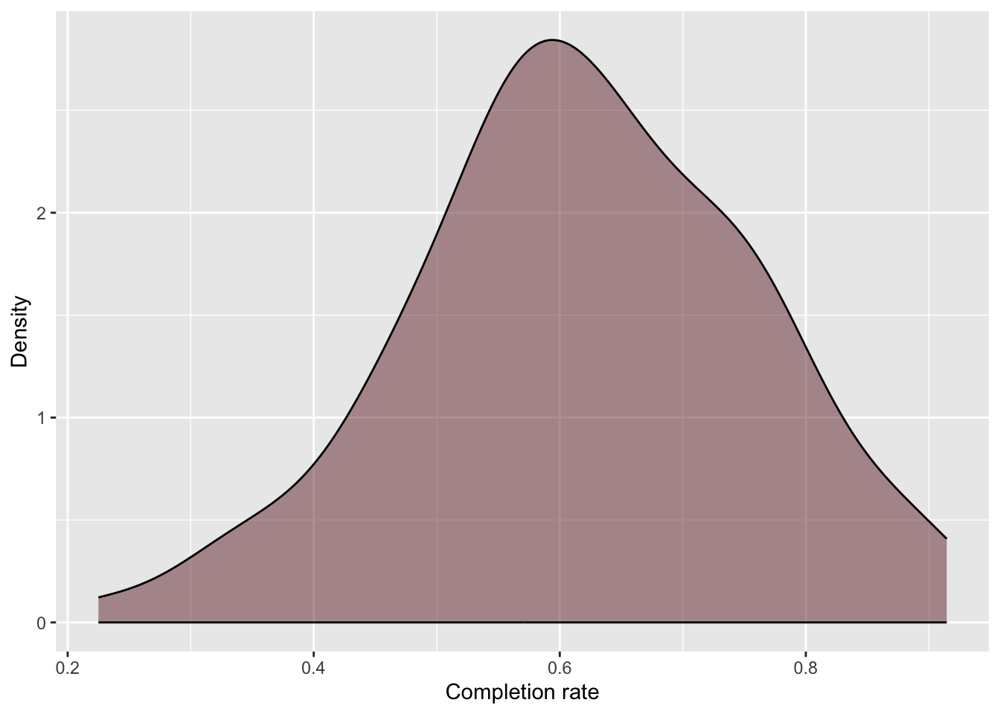
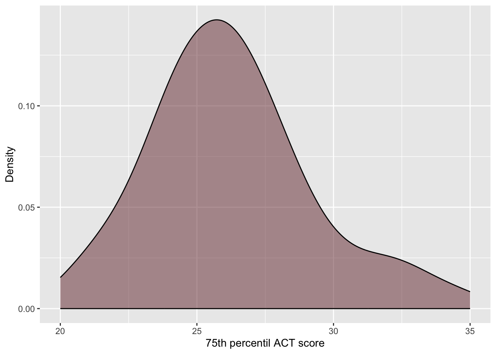
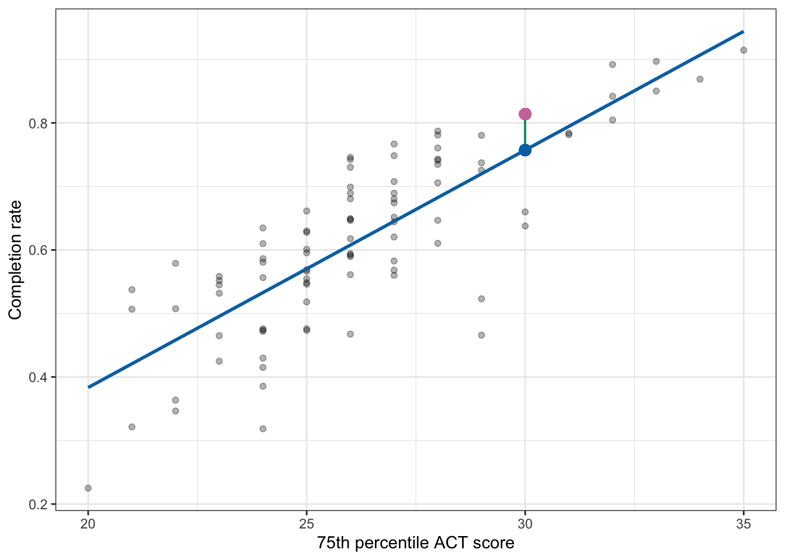

library(educate)
library(ggformula)
library(mosaic)
library(mosaicCore)
library(tidyverse)
# Import data
colleges <- read_csv("https://raw.githubusercontent.com/zief0002/epsy-5261/main/data/midwest-college-scorecard.csv")
# View data
colleges25 Linear Regression—Description
In this chapter you will learn about using linear regression to describe a linear relationship between two quantitative attributes.
25.1 Case Study: College Completion Rates and ACT Scores
The ACT is designed to measure the skills that are acquired in secondary education that are most important for success in postsecondary education. If this is the case, we would expect that postsecondary institutions that admit students with higher ACT scores would have better outcomes. In other words:
Are ACT scores predictive of better institutional outcomes?
To answer this question, we are going to examine the relationship between the 75th percentile ACT scores and the six-year completion rates for a sample of 92 postsecondary institutions in Minnesota and its adjacent states. To do this, we will be using the attributes act and completion_rate from the midwest-college-scorecard.csv dataset.
25.1.1 Data Exploration
As always, we will begin with an initial exploration of the sample data, in particular the distributions of the act and completion_rate attributes.
# Explore completion rates
gf_density(
~completion_rate, data = colleges,
color = "black",
fill = "#722F37",
xlab = "Completion rate",
ylab = "Density"
)
df_stats(~completion_rate, data = colleges)Density plot of completion rates for the 92 institutions in the sample.
The distribution of completion rates for the 92 colleges in the sample is unimodal and symmetric, with a typical institution having a completion rate of around 0.62 (mean). There is a great deal of variation in completion rates, with institutional completion rates ranging from 0.23 to 0.91. Most institutions have a completion rate between 0.48 and 0.76 (SD = 0.14).
# Explore wine rating
gf_density(
~act, data = colleges,
color = "black",
fill = "#722F37",
xlab = "75th percentil ACT score",
ylab = "Density"
)
df_stats(~act, data = colleges)Density plot of ACT scores for the 92 colleges in the sample.
The sample distribution of 75th percentile ACT scores is right skewed, with a typical institution having a 75th percentile ACT score of 26 (median). There is variation in these scores, with institutions having 75th percentile ACT score between 20 and 35. The middle 50% of the institutions have 75th percentile ACT score between 24 and 28.
25.1.2 Relationship Between Variables
To explore the relationship between ACT scores and completion rates we will create a scatterplot of these attributes. Because we ultimately want to predict institutions’ completion rates based on their ACT scores, we will put completion rate (the outcome, or attribute we want to predict) on the y-axis and ACT score (predictor) on the x-axis. We will also compute the correlation coefficient between these attributes.
gf_point(
completion_rate ~ act, data = colleges,
xlab = "75th percentile ACT score",
ylab = "Completion rate"
)
cor(completion_rate ~ act, data = colleges)[1] 0.8083368The plot visually shows the relationship (at least for these institutions) between 75th percentile ACT score and completion rate. When describing the relationship, remember, we want to touch on four characteristics of the relationship:
- Functional form of the relationship
- Direction/Trend
- Magnitude of the line, and
- Strength
The scatterplot suggests that there is a positive, linear relationship between 75th percentile ACT score and completion rate for the 92 institutions in our sample. This suggests that colleges that have higher 75th percentile ACT scores tend to also have higher completion rates. The magnitude of the relationship seems large as the slope of the relationship seems quite steep, indicating that even small changes in 75th percentle ACT score is associated with a big change in completion rates. This relationship seems pretty strong, with the data clustered pretty close to the line that describes this relationship (\(r = 0.808\)).
25.2 Statistical Model: Mathematical Description of the Data
Since the relationship’s functional form seems reasonably linear, we will use a linear model to describe the data. We can express this model mathematically as,
\[ Y = \beta_0 + \beta_1(X) + \epsilon \]
In this equation,
- \(Y\) is the outcome/response value,
- \(\beta_0\) is the intercept of the line that best fits the data,
- \(\beta_1\) is the slope of the line that best fits the data,
- \(X\) is the predictor value,
- \(\epsilon\) is the error term (a.k.a. residual).
The regression model describes the relationship between Y-values and X-values in the population. Every term in the model denoted using a Greek letter is an unknown parameter in this model. In the model we have written there are three unknown parameters denoted in the model: the intercept term (\(\beta_0\)), the slope term (\(\beta_1\)), and the residual term (\(\epsilon_i\)).1
25.2.1 Visual Representation of the Regression Model
To help better understand the model, consider the following plot:

This plot shows that at each value of X there is a distribution of Y. These distributions are called conditional distributions. For example, there would be a conditional distribution of completion rates for the institutions with a 75th percentile ACT score of 20 (in the population). There would be another distribution of completion rates for the institutions with a 75th percentile ACT score of 21 (in the population). And so on.
Each conditional distribution of Y has a mean; the conditional mean, which we denote as \(\hat{Y}\). These conditional means can be connected using a line. This is what it means to be able to express the conditional mean of Y as a linear function of X, or to say that the relationship between X and Y is linear.
25.2.2 Two Components of the Statistical Model
The linear statistical model (i.e., the regression model) can be separated into two components: the conditional mean component and an error component.
\[ Y = \underbrace{\beta_0 + \beta_1(X)}_{\substack{\text{Conditional} \\ \text{Mean}}} + \underbrace{\epsilon}_{\substack{\text{Error}}} \]
The first part of the equation gives the conditional mean value of Y, that is the mean value of Y for a particular X-value. The conditional mean of Y given a particular X value is denoted as \(\hat{Y}\). We express the conditional mean mathematically as,
\[ \hat{Y} = \beta_0 + \beta_1(X) \]
This part of the regression model is a description, in mathematical form, of how the conditional mean Y is related to X. The equation here indicates that the conditional mean of Y is a linear function of X. This implies that the conditional mean value of Y differs by a constant amount for a constant difference in X.
For example, the difference between the mean completion rate for institutions that have a 75th percentile ACT score of 20 and those that have a 75th percentile ACT score of 21 is the same as the difference between the mean completion rate for institutions that have a 75th percentile ACT score of 30 and those that have a 75th percentile ACT score of 31.
From the visual representation of the model, Figure 25.1, we can see that there is a distribution of Y-values at each X-value; this is represented by the normal distributions in the picture. In our example, there are many institutions who have the same 75th percentile ACT score, but have different completion rates. The error term in the statistical model accounts for this variation in Y for those cases that have the same X-value. Mathematically we can understand this by re-writing the statistical model, substituting \(\hat{Y}\) into the first part of the model.
\[ \begin{split} Y &= \beta_0 + \beta_1(X) + \epsilon \\[2ex] Y &= \hat{Y} + \epsilon \end{split} \]
This equation implies that each observed Y-value is the sum of the conditional mean value of Y (which is based on the X-value) and some residual (or error) term.
To further understand the residual term, consider the plot below. This figure shows the relationship between 75th percentile ACT scores and completion rates we plotted earlier. It also includes the regression line.

Consider the three institutions that have a 75th percentile ACT score of 21. The conditional mean completion rate for these institutions is approximately 0.42. This is denoted by the blue point. (Remember, the conditional means are on the regression line.) The error (residual) term allows for a discrepancy between the conditional mean of Y and the observed Y. In other words, none of these three institutions have an actual completion rate of 0.42. The residual represents the difference between an institution’s observed completion rate and the conditional mean completion rate.
Graphically, the residual is represented by the vertical distance between the line and a given point on the scatterplot. Some of those points are above the line (they have a positive residual) and some are below the line (they have a negative residual). Also note that for some observations the error term is smaller than for others.
25.3 Estimating Parameters in the Regression Model
The terms \(\beta_0\) and \(\beta_1\) in the statistical model are referred to as the regression parameters. One of the primary goals of a regression analysis is to estimate the values of the regression parameters (i.e., the intercept and slope terms).
In most statistical analyses, you will use a sample of data (not the entire population) to estimate the parameter values. Because a sample is only a subset of the population, the values we obtain for the parameters are imperfect estimates. To denote that the parameters are sample-based estimates, we denote estimates using Roman letters. For example, estimates of the parameters \(\beta_0\) and \(\beta_1\) are obtained after fitting the model to data. For example the estimated conditional means can be expressed mathematically as:
\[ \hat{Y} = b_0 + b_1(X) \]
25.3.1 Fitting a Regression Model to Data Using R
To fit the regression model to data using R, we will use the lm() function. The syntax for this function looks like this:
lm(outcome ~1 +predictor,data =dataframe)
where outcome is the name of the outcome/response attribute, predictor is the name of the predictor attribute, and dataframe is the name of the data frame. (The 1 on the right side of the tilde tells R to include the intercept in its computation.) When we fit a regression model in R, we will also assign the output to a new object in R. Below, we fit the model using education level to predict income. Here the output is assigned to an object called lm.a. We can print the regression parameter estimates by typing the lm() object name and hitting enter.
# Fit regression model
lm.a = lm(completion_rate ~ 1 + act, data = colleges)
# Print regression coefficients
lm.a
Call:
lm(formula = completion_rate ~ 1 + act, data = colleges)
Coefficients:
(Intercept) act
-0.36421 0.03738 Here the parameter estimates (or regression coefficients) are:
- \(b_0 = -0.36\)
- \(b_1 = .04\)
Remember that these are estimates obtained from fitting the model to the sample data, and therefore we use the Roman letters to denote their values. Once we have the parameter estimates, we write the fitted equation which gives the mathematical description of the conditional means of Y. Based on our estimates, the fitted equation is:
\[ \hat{\mathrm{Completion~Rate}} = -0.36 + 0.04(\mathrm{ACT}) \]
25.3.2 Intercept Interpretation
The estimate for the intercept was \(-0.36\). Graphically, this value indicates the value where the line passes through the Y-axis (i.e., Y-intercept). As such, it gives the \(\hat{Y}\) or predicted conditional mean value when \(X=0\). Algebraically we get the same thing if we substitute 0 in for X in the fitted regression equation.
\[ \begin{split} \hat{\mathrm{Completion~Rate}} &= -0.36 + 0.04(\mathrm{ACT}) \\[2ex] &= -0.36 + 0.04(0) \\[2ex] &= -0.36 \end{split} \]
Interpreting the slope coefficient in our example,
The intercept of \(-0.36\) is the predicted mean completion rate for all institutions that have a 75th percentile ACT score of 0.
25.3.3 Slope Interpretation
Recall from algebra that the slope of a line describes the change in Y versus the change in X. In regression, the slope describes the predicted change in \(\hat{Y}\) for a one-unit difference in X. In our example,
\[ b_1 = \frac{\Delta\hat{Y}}{\Delta X} = \frac{0.04}{1} \]
Again, because \(\hat{Y}\) is a conditional mean, the slope represents the difference in predicted mean completion rates for each one-point difference in 75th percentile ACT score. Interpreting the slope coefficient in our example,
Each one-year difference in education level is associated with a model predicted difference of $2,651 in mean income.
To better understand this, consider colleges with different 75th percentile ACT scores. The first set of colleges have a 75th percentile ACT score of 20. The second set has a 75th percentile ACT score of 21, and the third set has aa 75th percentile ACT score of 22. Now let’s compute the predicted mean completion rate for each of these institutions using our fitted equation.
\[ \begin{split} \mathbf{ACT=20:~~} \hat{\mathrm{Completion~Rate}} &= -0.36 + 0.04(20) \\[2ex] &= 0.44 \end{split} \]
\[ \begin{split} \mathbf{ACT=21:~~} \hat{\mathrm{Completion~Rate}} &= -0.36 + 0.04(21) \\[2ex] &= 0.48 \end{split} \]
\[ \begin{split} \mathbf{ACT=22:~~} \hat{\mathrm{Completion~Rate}} &= -0.36 + 0.04(22) \\[2ex] &= 0.52 \end{split} \]
Each set of colleges have a 75th percentile ACT score differ by one point (20 to 21 to .04.
25.4 Estimating Errors/Residuals
Note that we can also use the estimated regression coefficients to obtain estimates for the residuals, often referred to as the observed residuals. Here we make use of the earlier idea that the residual term was the difference between the observed value of Y and the conditional mean of Y for a given X-value. Mathematically,
\[ \epsilon = Y - \hat{Y} \]
Once we use data to obtain estimates for the intercept and slope (\(b_0\) and \(b_1\)) we can substitute those into the fitted equation and obtain an estimate for the conditional mean (\(\hat{Y}\)). This value can then be used to obtain an estimate for the residual.
\[ e = Y - \hat{Y} \]
Remember, the use of the roman letter “e” for the residual indicates it is an estimate based on values obtained from the data!
As an example, consider the data for the Marquette University.
Marquette University has a 75th percentile ACT score of 30, and its observed completion rate is 0.814.
Using the fitted regression equation, we can compute the predicted conditional mean completion rate for institutions with a 75th percentile ACT score of 30 as,
\[ \begin{split} \hat{\mathrm{Completion~Rate}} &= -0.3642 + 0.0374(30) \\[2ex] &= 0.757 \end{split} \]
Now we can use the estimated conditional mean to also compute Marquette University’s residual.
\[ \begin{split} e &= \mathrm{Completion~Rate} - \hat{\mathrm{Completion~Rate}}\\[2ex] &= 0.814 - 0.757 \\[2ex] &= 0.057 \end{split} \]
The positive residual suggests that Marquette University has a completion rate that is 0.057 higher than the average predicted completion rate for colleges with a 75th percentile ACT score of 30. We can also represent these values graphically.

25.5 Answering the Research Question
Remember that this whole analysis was driven because we wanted to answer a question, namely whether 75th percentile ACT scores are predictive of college completion rates. The results from the regression analysis allow us to answer this question.
To answer the question of whether 75th percentile ACT scores are predictive of college completion rates, a linear regression model was fitted to the data. The results of this analysis suggested that 75th percentile ACT scores are positively related to completion rates for the 92 sample colleges (\(b_1 = 0.037\)). Each 1-point difference in 75th percentile ACT scores of education is associated with a 0.037-unit difference in completion rates, on average.
Technically there are many unknown residuals, one for each case, but the assumptions we put on the linear model make it so that we only care about the variance of the residuals, hence a single unknown.↩︎